윈도우 검색에서 cmd를 검색
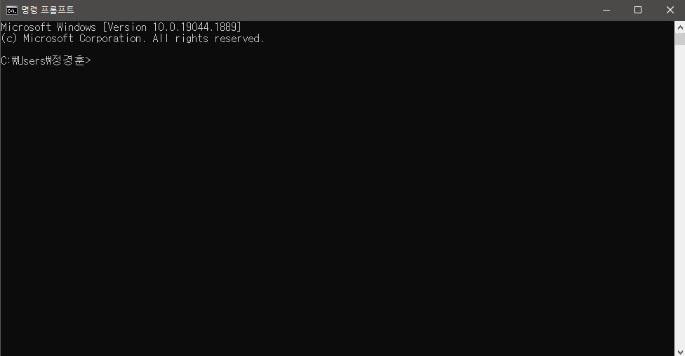cmd(명령 프롬프트) 창 확인
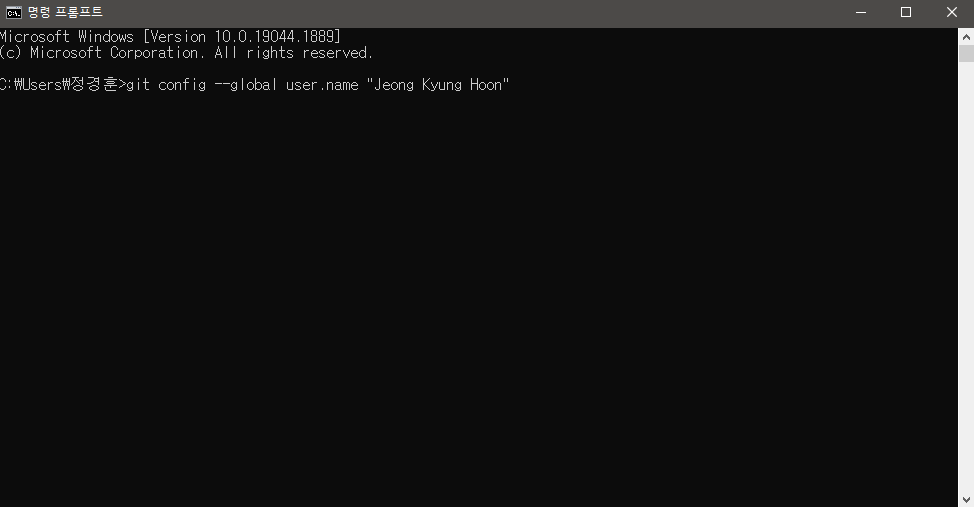git의 이름 입력
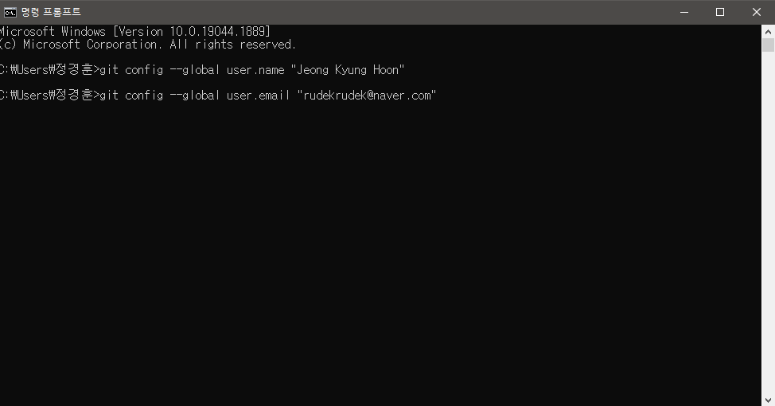git의 메일 입력
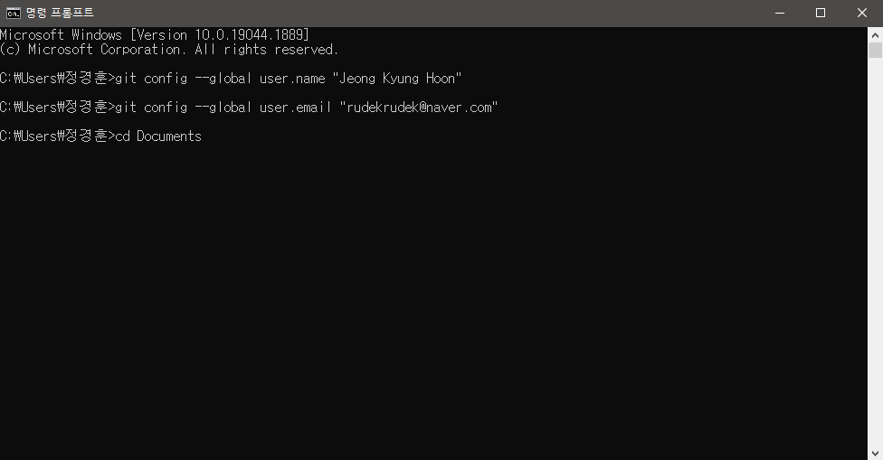
문서 폴더로 이동, cd는 폴더 이동 명령어로 열고자 하는 폴더를 입력
..을
입력하면 상위 폴더로 이동한다.
dir 명령어는 현재 폴더의 내용을 확인할 수 있다.
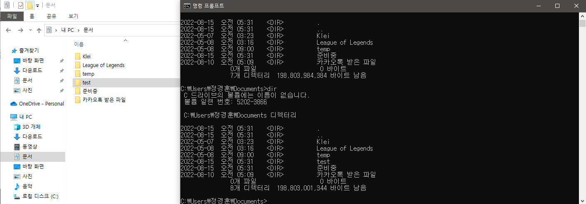test 폴더를 생성하고 확인한다.
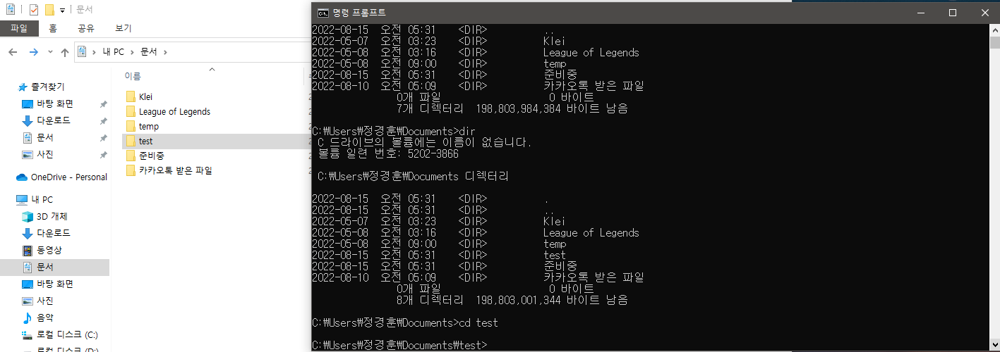cd 명령어를 사용해 test 폴더로 이동한다
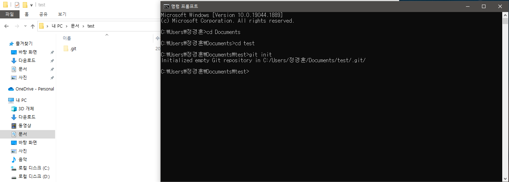
git 명령어 중 init 명령어를 사용해 폴더에 git 초기 파일을 붙여넣는다.
git을
사용하기 위한 기초 파일을 생성한다.
git 명령어 중 checkout 명령어를 사용해 작업 영역을 master로 변경한다.
-b
옵션은 브랜치가 없을 경우 생성한다.
보통 master 브랜치나 main
브랜치를 사용한다
브랜치는 작업 영역으로 새로운 복사 파일이라고
이해해도 된다.
git 명령어 중 add 명령어로 변경된 파일을 추가한다.
지금은 아직 변경된
파일이 없어서 추가되는 것이 없다.
git 명령어 중 commit 명령어를 사용해 로컬 저장소에 저장한다.
add로
추가된 내용이 없어 commit이 진행되지 않는다.
test.txt 파일을 생성한다.
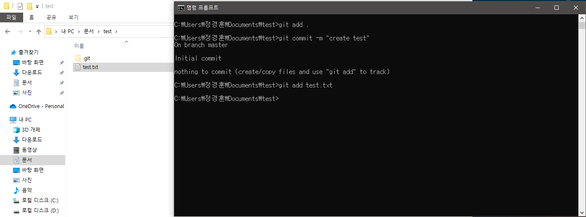
git 명령어 중 add 명령어를 사용해 test.txt 파일에 대한 변경 내용을
추가한다.
위에서 사용한 . 은 변경된 모든 파일을 추가한다.
스크린샷에서는
test.txt 파일을 추가했다.
git 명령어 중 commit 명령어를 사용해 add로 추가된 내용을 로컬 저장소에
저장한다.
-m 옵션은 commit에 대한 메세지를 추가한다.
git 명령어 중 remote 명령어를 사용해 원격 저장소를 설정한다.
add
옵션은 원격 저장소를 추가하며 "이름 주소" 순으로 입력한다.
스크린샷에서는
origin 이라는 이름으로 원격 저장소(github)를 추가했다.
git 명령어 중 push 명령어를 사용해 원격 저장소에 로컬 저장소 내용을
저장한다.
"원격저장소이름 브랜치이름" 순으로 입력한다.
처음 입력 시 github 로그인에 대한 팝업창이 노출된다.
"Sign in with
your browser" 버튼으로 웹페이지와 연동하여 로그인을 진행한다.
맥의
경우 다른 방법을 사용하며 필요 시 요청바랍니다.
원격 저장소에 저장이 완료된다.
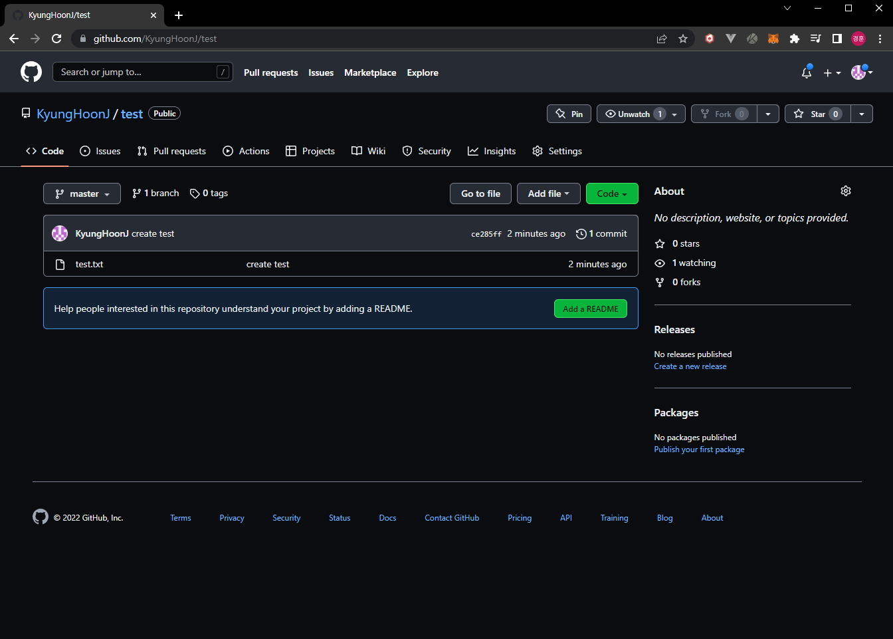github 웹사이트에서 저장한 내용을 확인할 수 있다.
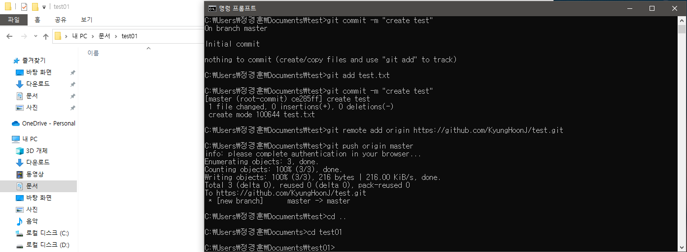다른 로컬 저장소를 만들기 위해 폴더를 생성한다.
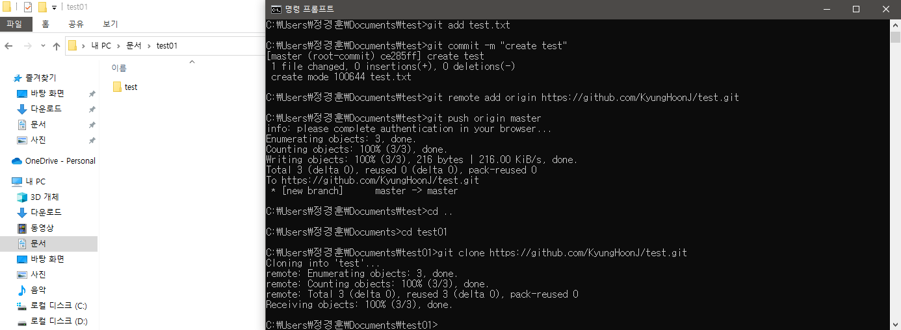git 명령어 중 clone 명령어를 사용해 원격 저장소를 복사한다.
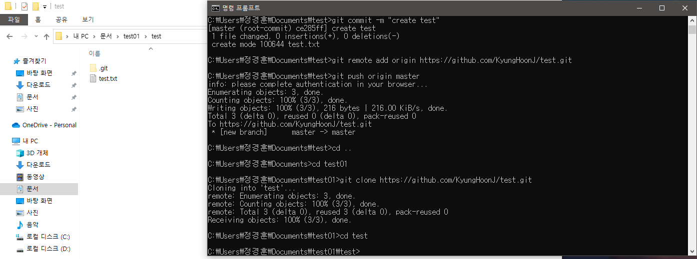하위 test 폴더를 확인한다.
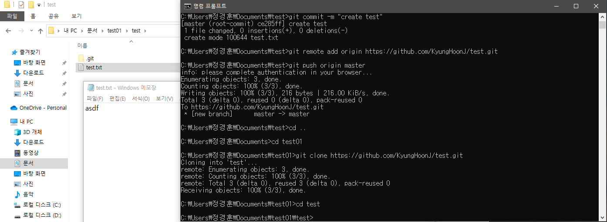test.txt 파일의 내용을 수정한다.
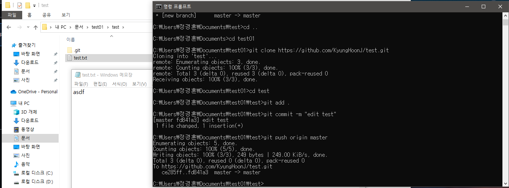
위의 방법대로 변경된 test.txt 파일을 원격 저장소에 저장한다.
원격
저장소에 저장 방법은 add, commit, push 순으로 진행한다.
기존 로컬 저장소를 확인한다.
pull을 받지 않았기 때문에 바로 위에서
수정한 내용이 적용되지 않았다.
git 명령어 중 pull 명령어를 사용해 원격 저장소에서 변경된 내용을
받아온다.
"원격저장소이름 브랜치이름" 순으로 입력한다.